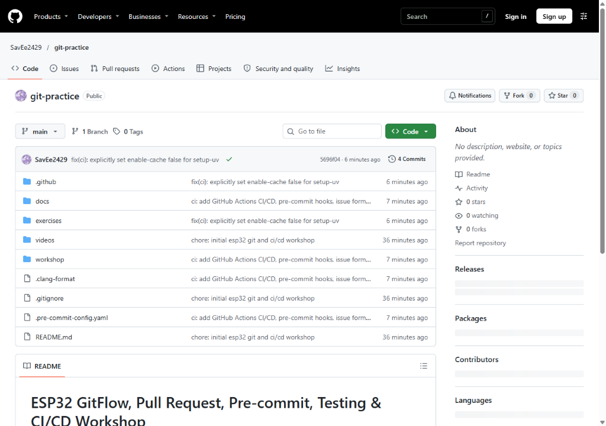
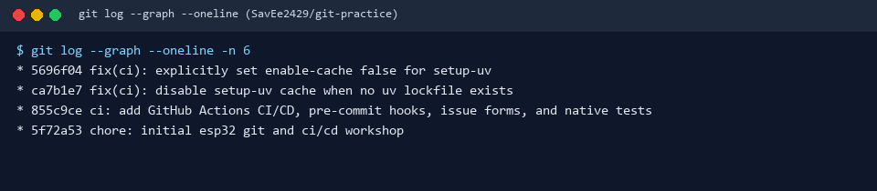
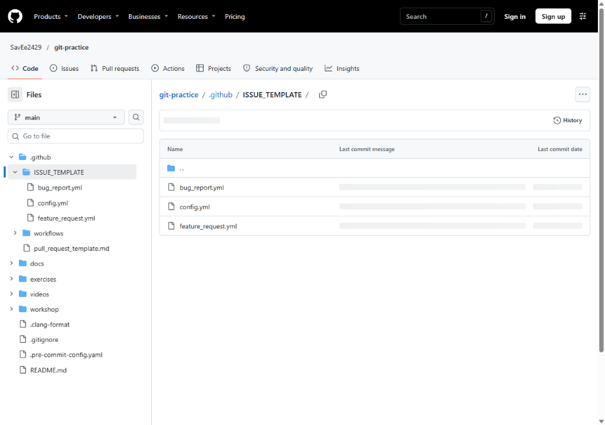
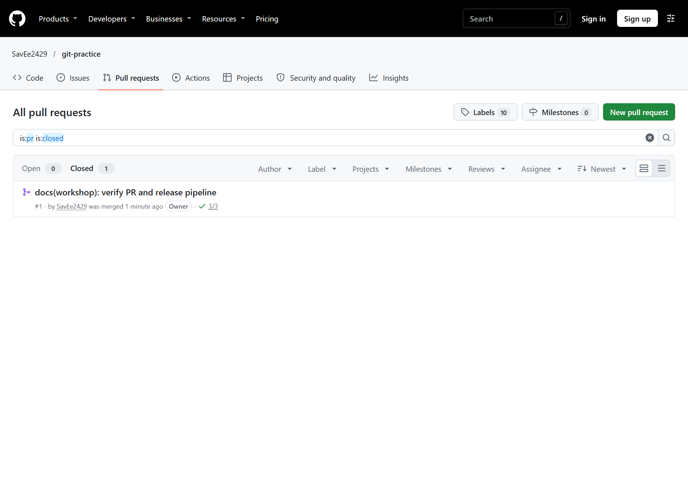
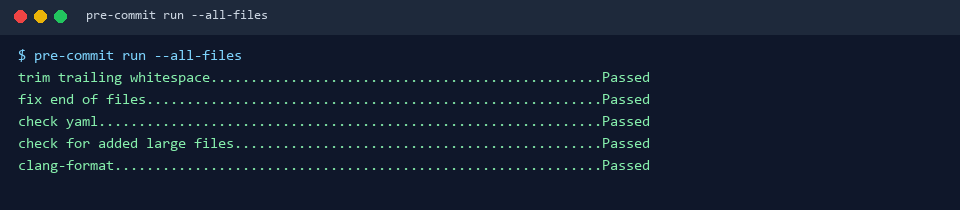
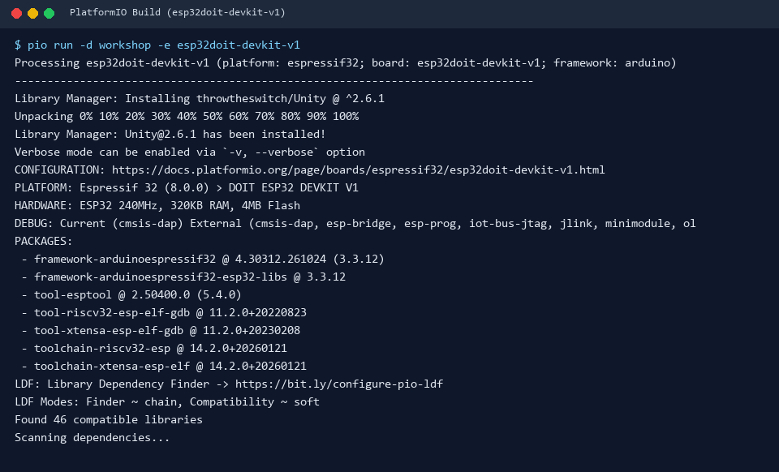
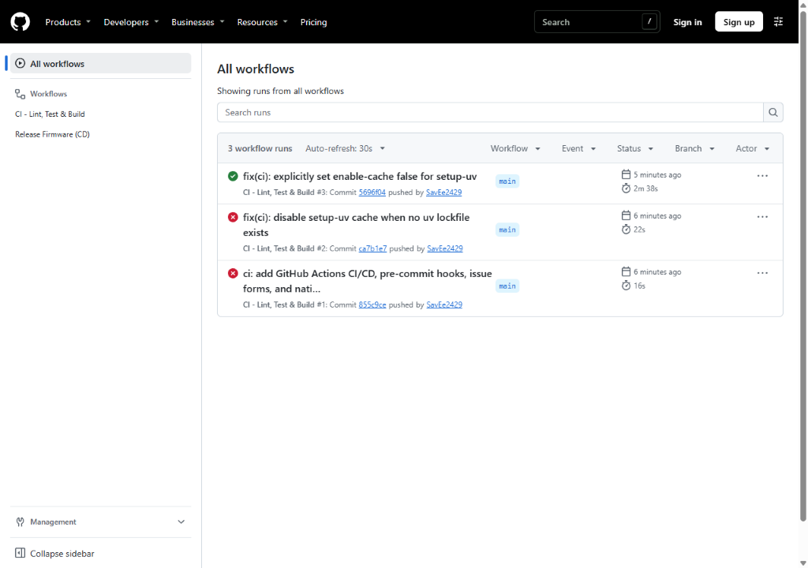
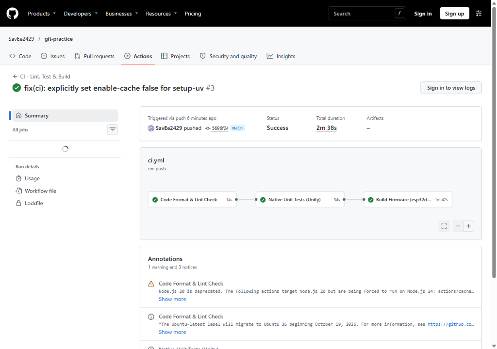
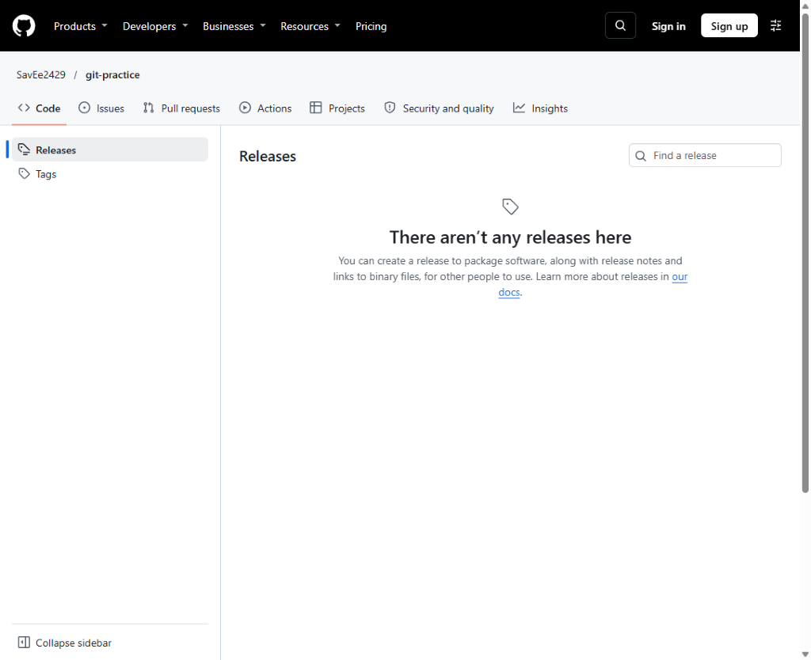
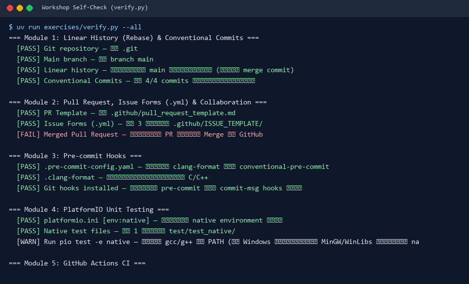

คู่มือภาพนำทาง (Visual-First Guide) สำหรับพัฒนา Firmware ESP32 อย่างเป็นระบบ
ครบทั้ง ทำยังไง (How) • ทำไมต้องทำ (Why) • ทำแล้วดียังไง (Benefits)
uv (uv tool install pre-commit) • GitHub CLI (gh) •
สำหรับ Windows ที่ต้องการรัน pio test -e native ในเครื่อง: ติดตั้ง MinGW/WinLibs (gcc/g++) ใน PATH
หากทุกคน Commit ตรงเข้า main โค้ดที่ยังเขียนไม่เสร็จจะปนกับโค้ดที่ปล่อยลงบอร์ดจริง และย้อนหาจุดพังยาก
ใช้ main เป็นเส้นตรงเส้นเดียว แตก feature/* สั้นๆ แล้ว Rebase เข้า main พร้อมตั้งชื่อ Commit แบบ feat:, fix:
main สะอาดพร้อม Flash เสมอ, อ่านประวัติย้อนหลังรู้เรื่องทันที และสร้าง Release Notes อัตโนมัติได้
# กดปุ่ม Fork บน GitHub ไปยัง Account ของตัวเองก่อน git clone https://github.com/<your-user>/esp32-workshop.git cd esp32-workshop
git checkout -b feature/fast-blink main # แก้ไข lib/blink_math หรือ src/main.cpp git add -A git commit -m "feat(blink): add fast blink preset" git fetch origin && git rebase origin/main


uv run exercises/verify.py --module 1 (เช็ก Git repo, branch main เส้นตรง, และ Conventional Commits)
เขียนโค้ดคนเดียวมักมองข้ามบั๊กหรือ Edge Cases และการ Push ทับ main โดยตรงเสี่ยงทำระบบทั้งทีมพัง
สร้าง .github/pull_request_template.md, เปิด PR ผ่าน GitHub/gh, และตั้ง Branch Protection ห้าม Push ตรงเข้า main
มีเพื่อนช่วยตรวจโค้ดก่อน Merge, แชร์ความรู้ในทีม, และบันทึกเหตุผลการแก้โค้ดไว้ตรวจสอบย้อนหลังได้
mkdir -p .github/ISSUE_TEMPLATE # วาง bug_report.yml, feature_request.yml, config.yml # วาง .github/pull_request_template.md git push -u origin feature/fast-blink
gh pr create --base main --fill # หลัง Review + CI ผ่าน (คงเส้นตรง 100%): gh pr merge --rebase --delete-branch


.github/ISSUE_TEMPLATE/*.yml): ใช้คีย์ name, description, labels และ body: (รองรับ type: input, dropdown, textarea, checkboxes) ทำให้ผู้แจ้งบั๊กกรอกข้อมูลครบตั้งแต่ต้น และตั้ง blank_issues_enabled: false ใน config.yml เพื่อบังคับใช้ฟอร์มเสมอmain แล้วติ๊ก Require a pull request before merging, Require status checks to pass และ Require linear history (บังคับ Squash/Rebase ให้ประวัติเป็นเส้นตรงเสมอ)
รอให้ CI บน GitHub แจ้งเตือนว่าลืมจัดฟอร์แมตหรือเขียน Commit ผิด เสียเวลารอ Build และทำให้ PR รก
วางไฟล์ .pre-commit-config.yaml + .clang-format แล้วรัน pre-commit install
โค้ดทั้งทีมหน้าตาเหมือนกัน 100%, ลด Conflict จากการจัดย่อหน้า, และจับปัญหาได้ใน 1 วินาทีก่อน Push
uv tool install pre-commit pre-commit install pre-commit install --hook-type commit-msg
pre-commit run --all-files

การแก้โค้ดแล้วต้องเสียบสาย Flash ลงบอร์ดเพื่อเทสด้วยตาทุกครั้งช้ามาก และบน GitHub Actions ไม่มีบอร์ด ESP32 เสียบอยู่
แยก Logic ไว้ใน lib/, เพิ่ม [env:native] ใน platformio.ini และเขียนเทสด้วย Unity ใน test/test_native/
รันเทสทั้งหมดเสร็จในไม่กี่วินาที, มั่นใจว่าแก้ฟังก์ชันหนึ่งไม่ทำให้ส่วนอื่นพัง, และรันบน CI ได้อัตโนมัติ
pio test -e native -v
pio test -e esp32doit-devkit-v1

ป้องกันปัญหา "ในเครื่องฉันรันผ่าน แต่เครื่องเพื่อนพัง" และรับประกันว่าโค้ดใน PR คอมไพล์ลง ESP32 ได้จริง
สร้าง .github/workflows/ci.yml แบ่ง 3 Jobs (lint → unit-test → build-esp32) พร้อม Cache ~/.platformio
ตรวจทุก PR อัตโนมัติ 24 ชม., มีไฟเขียว/แดงบอกชัดเจนก่อน Merge และโหลดไฟล์ทดสอบจาก release/* ได้
name: ชื่อ Workflow ที่โชว์ในแท็บ Actions
on: เหตุการณ์ที่สั่งให้รัน (push, pull_request, tags)
jobs: รายการงาน (เช่น lint, unit-test, build-esp32)
runs-on: ubuntu-latest # เครื่องเสมือน (Runner)
needs: lint # รอให้ job ก่อนหน้าผ่านก่อน
steps:
- uses: actions/checkout@v7 # เรียก Action สำเร็จรูป
with: ... # ส่งพารามิเตอร์ให้ Action
- uses: astral-sh/setup-uv@v10.3.3 # ตั้งค่า uv แทน pip/python
- run: pio test -e native # รันคำสั่ง Shell เอง
if: startsWith(...) # เงื่อนไขในการรัน
1. GitHub Marketplace: github.com/marketplace?type=actions 2. Official Actions (เชื่อถือได้สูงสุด): github.com/actions, astral-sh/setup-uv 3. วิธีดูวิธีใช้: เปิดดู README.md หรือ action.yml ของ Repo นั้นเพื่อดู inputs (with:) และเวอร์ชันล่าสุด * แนะนำระบุเลขเวอร์ชันล่าสุด เช่น @v7, @v10.3.3


uv run exercises/verify.py --module 5
การ Build ไฟล์ส่งให้ลูกค้า/ทีมอื่นด้วยมือเสี่ยงหยิบผิดเวอร์ชัน หรือส่งไฟล์ firmware.bin ไปอย่างเดียวแล้ว Flash บอร์ดใหม่ไม่ติด
สร้าง .github/workflows/release.yml ให้ทำงานเมื่อ Push Tag v*.*.* แล้วใช้ esptool.py merge_bin รวมไฟล์
ได้ไฟล์ .bin ที่ตรงกับ Tag เสมอ, มี Release Notes อัตโนมัติ, และเลือกโหลดได้ทั้งแบบ OTA หรือไฟล์เดียวจบ
git checkout -b release/v1.0.0 main # อัปเดต CHANGELOG / version แล้ว push ให้ ci.yml รันผ่าน git push -u origin release/v1.0.0 gh pr create --base main --fill gh pr merge --rebase --delete-branch
git checkout main && git pull origin main git tag -a v1.0.0 -m "release: v1.0.0" git push origin v1.0.0 uv run exercises/verify.py --all

